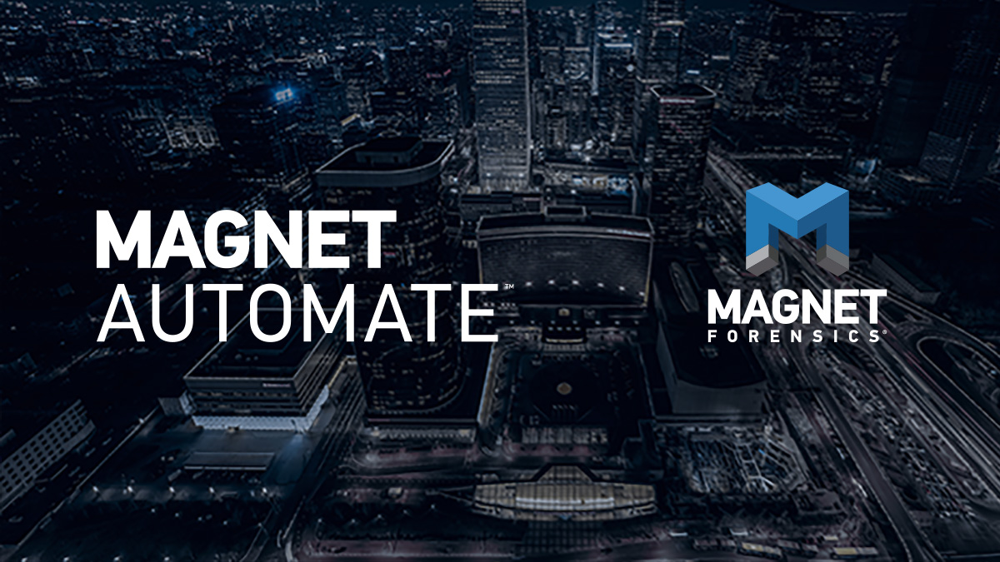
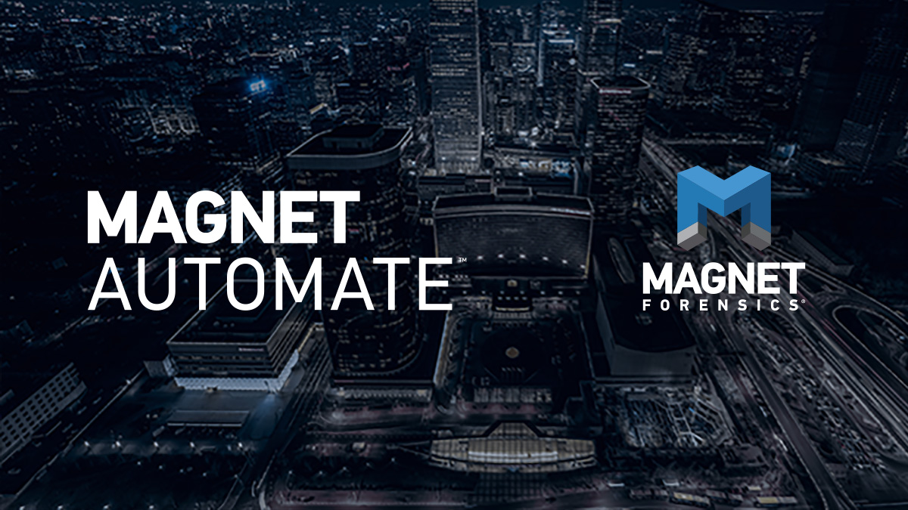

JOB DESCRIPTION
As a software developer at Magnet Forensics, I was required to help out on the Automate team by working on assigned tickets, creating tests for each ticket I worked on, creating tickets for new issues I came across, and helping with any tasks the team needed an extra hand on. I worked on a variety of different tickets throughout my work term. The first big ticket I completed called for me to update Automate’s file browser so that it automatically refreshed files without the user having to restart the program. I created JavaScript code that's purpose was to traverse a file system in order to get important file information. I also used simple Redux for the first time, and was able to refactor an existing reducer in order to update the program’s state, specifically changing how the file browser functioned.
 

Along with working on and learning more about front-end development, I was also given opportunities to work on tickets that involved back-end development using the functional programming language Clojure. Though I did not work on any tickets that directly involved it, I also got exposure to what programming with C# is like. Throughout my work term I learned a lot about testing, as at Magnet Forensics programmers are required to write their own tests for every ticket they work on. I got experience creating tests using the Jest library, Clojure unit testing, end-to-end testing using Cypress, manual Build Verification Tests, and simple API testing using Postman. In addition to this, I was able to learn about commonly used project management tools like AGILE methodologies, Jira, Git and Gerrit, and Jenkins. Finally, I also got some exposure to working with databases, specifically using SQLite.